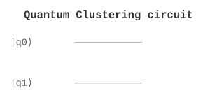

ML / 机器学习 | 难度：高级 | 预计时间：20 分钟
量子聚类是经典聚类算法的量子推广，利用量子计算加速聚类。
经典聚类算法（如 K-means）需要 \(O(NKd)\) 时间
对于大规模数据，经典方法效率低
量子聚类可以利用量子并行性加速
可以处理高维数据
提供量子优势
数据分析
图像处理
模式识别
from quonic.ml import quantum_clustering
# Quantum clustering
data = [[0, 1], [1, 0], [1, 1], [0, 0]]
result = quantum_clustering(data, n_clusters=2)
print(f"Labels: {result.labels}")预期输出：
Labels: [0, 1, 1, 0]
量子聚类基于量子距离估计： \[\begin{equation} d(x_i, x_j) = 1 - |\langle\phi(x_i)|\phi(x_j)\rangle|^2 \end{equation}\]
算法步骤：
将数据编码到量子态
用量子距离估计计算距离矩阵
用经典聚类算法（如 K-means）聚类
量子聚类将数据映射到量子态空间，通过量子距离估计计算距离，然后用经典算法聚类。
from quonic.ml import quantum_clustering
# quantum_clustering(data, n_clusters, shots)
# data: input data points
# n_clusters: number of clusters
# shots: number of measurements
result = quantum_clustering(data, n_clusters=2, shots=1024)
# result.labels: cluster labels
# result.centroids: cluster centroids
print(f"Labels: {result.labels}")# Different datasets
data1 = [[0, 1], [1, 0], [1, 1], [0, 0]]
result1 = quantum_clustering(data1, n_clusters=2)
data2 = [[0, 0, 1], [1, 0, 0], [0, 1, 0], [1, 1, 1]]
result2 = quantum_clustering(data2, n_clusters=2)量子聚类可以用于大规模数据分析。
量子聚类可以用于图像分割和分类。
量子聚类可以利用量子并行性加速距离计算。
需要能够高效编码数据到量子态。
聚类算法
量子核方法
量子态编码
量子 SVM
量子神经网络
量子降维
from quonic.ml import quantum_clustering
data = [[0, 1], [1, 0], [1, 1], [0, 0]]
result = quantum_clustering(data, n_clusters=2)
print(f"Labels: {result.labels}")